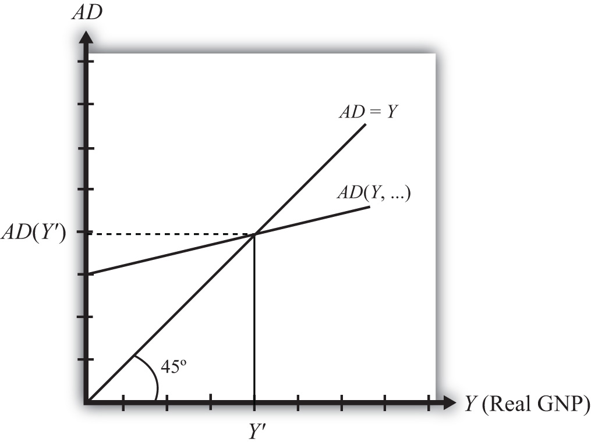
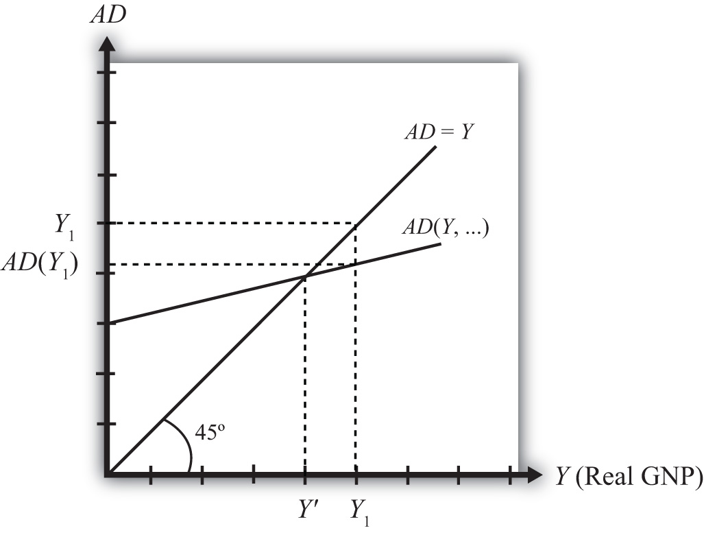

In most introductory macroeconomics courses, the basic Keynesian model is presented as a way of showing how government spending and taxation policies can influence the size of a country’s growth national product (GNP). This chapter revisits the basic Keynesian model but adds an international angle by including impacts on domestic demand for goods and services caused by changes in the exchange rate. With this relationship in place, the chapter concludes with several comparative statics exercises showing how changes in key variables may influence the level of GNP.
This chapter describes how the supply and demand for the national output of goods and services combine to determine the equilibrium level of national output for an economy. The model is called the goods and services market model, or just the G&S market model.
In this model, we use gross national product (GNP) as the measure of national output rather than gross domestic product (GDP). This adjustment is made because we wish to define the trade balance (EX − IM) as the current account (defined as the difference between exports and imports of goods, services incomes payments/receipts, and unilateral transfers). This adjustment is discussed in more detail in Section 19.6 "Export and Import Demand".
The diagram used to display this model is commonly known as the Keynesian cross. The model assumes, for simplicity, that the amount of national output produced by an economy is determined by the total amount demanded. Thus if, for some reason, the demand for GNP were to rise, then the amount of GNP supplied would rise up to satisfy it. If demand for the GNP falls—for whatever reason—then supply of GNP would also fall. Consequently, it is useful to think of this model as “demand driven.”
The model is developed by identifying the key determinants of GNP demand. The starting point is the national income identity, which states that
GNP = C + I + G + EX − IM,that is, the gross national product is the sum of consumption expenditures (C), investment expenditures (I), government spending (G), and exports (EX) minus imports (IM).
Note that the identity uses GNP rather than GDP if we define EX and IM to include income payments, income receipts, and unilateral transfers as well as goods and services trade.
We rewrite this relationship as
AD = CD + ID + GD + EXD − IMD,where AD refers to aggregate demand for the GNP and the right-side variables are now read as consumption demand, investment demand, and so on. The model further assumes that consumption demand is positively related to changes in disposable incomeAll the income households have at their disposal to spend. It is defined as national income (GNP), minus taxes taken away by the government, plus transfer payments that the government pays out to people. (Yd). Furthermore, since disposable income is in turn negatively related to taxes and positively related to transfer payments, these additional variables can also affect aggregate demand.
The model also assumes that demand on the current account (CAD = EXD − IMD) is negatively related to changes in the domestic real currency value (i.e., the real exchange rate) and changes in disposable income. Furthermore, since the domestic real currency value is negatively related to the domestic price level (inflation) and positively related to the foreign price level, these variables will also affect current account demand.
Using the G&S market model, several important relationships between key economic variables are shown:
The G&S market model connects with the money market because the value of GNP determined in the G&S model affects money demand. If equilibrium GNP rises in the G&S model, then money demand will rise, causing an increase in the interest rate.
The G&S model also connects with the foreign exchange (Forex) market. The equilibrium exchange rate determined in the Forex affects the real exchange rate that in turn influences demand on the current account.
A thorough discussion of these interrelationships is given in Chapter 20 "The AA-DD Model".
There is one important relationship omitted in this version of the G&S model, and that is the relationship between interest rates and investment. In most standard depictions of the Keynesian G&S model, it is assumed that increases (decreases) in interest rates will reduce (increase) demand for investment. In this version of the model, to keep things simple, investment is assumed to be exogenous (determined in an external process) and unrelated to the level of interest rates.
Some approaches further posit that interest rates affect consumption demand as well. This occurs because household borrowing, to buy new cars or other consumer items, will tend to rise as interest rates fall. However, this relationship is also not included in this model.
The main results from the G&S model are the following:
Jeopardy Questions. As in the popular television game show, you are given an answer to a question and you must respond with the question. For example, if the answer is “a tax on imports,” then the correct question is “What is a tariff?”
The Keynesian model of aggregate demand for goods and services is developed by identifying key determinants of demand for the national output. When we talk about aggregate demand (AD), it means demand by households, businesses, and the government for anything and everything produced within the economy. The starting point is the national income identity, which states that
GNP = C + I + G + EX − IM,that is, the gross national product is the sum of consumption expenditures, investment expenditures, government spending, and exports minus imports of goods and services.
We rewrite this relationship as
AD = CD + ID + GD + EXD − IMD,where the left side, AD, refers to aggregate demand for the GNP and the right-side variables are read as consumption demand, investment demand, and so on. Determinants of the right-side variables will be considered in turn.
It is important to remember that demand is merely what households, businesses, and the government “would like” to purchase given the conditions that exist in the economy. Sometimes demand will be realized, as when the economy is in equilibrium, but sometimes demand will not be satisfied. On the other hand, the variable Y, for real GNP, represents the aggregate supply of G&S. This will correspond to the actual GNP whether in equilibrium or not.
Next, we’ll present the determinants of each demand term: consumption, investment, government, and export and import demand.
Jeopardy Questions. As in the popular television game show, you are given an answer to a question and you must respond with the question. For example, if the answer is “a tax on imports,” then the correct question is “What is a tariff?”
Consumption demand represents the demand for goods and services by individuals and households in the economy. This is the major category in the national income accounts for most countries, typically comprising from 50 percent to 70 percent of the gross national product (GNP) for most countries.
In this model, the main determinant of consumption demand is disposable income. Disposable income is all the income households have at their disposal to spend. It is defined as national income (GNP) minus taxes taken away by the government, plus transfer paymentsGovernment expenditures made to individuals or businesses without any good or service received in exchange. It includes social insurance payments, welfare payments and unemployment compensation. that the government pays out to people. More formally, this is written as
Yd = Y − T + TR,where Yd refers to disposable income, Y is real GNP, T is taxes, and TR represents transfer payments.
In this relationship, disposable income is defined in the same way as in the circular flow diagram presented in Chapter 13 "National Income and the Balance of Payments Accounts", Section 13.7 "The Twin-Deficit Identity". Recall that taxes withdrawn from GNP are assumed to be all taxes collected by the government from all sources. Thus income taxes, social insurance taxes, profit taxes, sales taxes, and property taxes are all assumed to be included in taxes (T). Also, transfer payments refer to all payments made by the government that do not result in the provision of a good or service. All social insurance payments, welfare payments, and unemployment compensation, among other things, are included in transfers (TR).
In the G&S model, demand for consumption G&S is assumed to be positively related to disposable income. This means that when disposable income rises, demand for consumption G&S will also rise, and vice versa. This makes sense since households who have more money to spend will quite likely wish to buy more G&S.
We can write consumption demand in a functional form as follows:
This expression says that consumption demand is a function CD that depends positively (+) on disposable income (Yd). The second term simply substitutes the variables that define disposable income in place of Yd. It is a more complete way of writing the function. Note well that CD here denotes a function, not a variable. The expression is the same as if we had written f(x), but instead we substitute a CD for the f and Yd for the x.
It is always important to keep track of which variables are exogenous and which are endogenous. In this model, real GNP (Y) is the key endogenous variable since it will be determined in the equilibrium. Taxes (T) and transfer payments (TR) are exogenous variables, determined outside the model. Since consumption demand CD is dependent on the value of Y, which is endogenous, CD is also endogenous. By the same logic, Yd is endogenous as well.
It is common in most introductory textbooks to present the consumption function in linear form. For our purposes here, this is not absolutely necessary, but doing so will allow us to present a few important points.
In linear form, the consumption function is written as
Here C0 represents autonomous consumption and mpc refers to the marginal propensity to consume.
Autonomous consumption (C0) is the amount of consumption that would be demanded even if income were zero. (Autonomous simply means “independent” of income.) Graphically, it corresponds to the y-intercept of the linear function. Autonomous consumption will be positive since households will spend some money (drawing on savings if necessary) to purchase consumption goods (like food) even if income were zero.
The marginal propensity to consume (mpc)The additional consumption demanded with an additional dollar of disposable income. represents the additional (or marginal) demand for G&S given an additional dollar of disposable income. Graphically, it corresponds to the slope of the consumption function. This variable must be in the range of zero to one and is most likely to be between 0.5 and 0.8 for most economies. If mpc were equal to one, then households would spend every additional dollar of income. However, because most households put some of their income into savings (i.e., into the bank, or pensions), not every extra dollar of income will lead to a dollar increase in consumption demand. That fraction of the dollar not used for consumption but put into savings is called the marginal propensity to save (mps)The additional saving that occurs with an additional dollar of disposable income.. Since each additional dollar must be spent or saved, the following relationship must hold:
mpc + mps = 1,that is, the sum of the marginal propensity to consume and the marginal propensity to save must equal 1.
Jeopardy Questions. As in the popular television game show, you are given an answer to a question and you must respond with the question. For example, if the answer is “a tax on imports,” then the correct question is “What is a tariff?”
Investment demand refers to the demand by businesses for physical capital goods and services used to maintain or expand its operations. Think of it as the office and factory space, machinery, computers, desks, and so on that are used to operate a business. It is important to remember that investment demand here does not refer to financial investment. Financial investment is a form of saving, typically by households that wish to maintain or increase their wealth by deferring consumption till a later time.
In this model, investment demand will be assumed to be exogenous. This means that its value is determined outside of the model and is not dependent on any variable within the model. This assumption is made primarily to simplify the analysis and to allow the focus to be on exchange rate changes later. The simple equation for investment demand can be written as
ID = I0,where the “0,” or naught, subscript on the right side indicates that the variable is exogenous or autonomous. In words, the equation says that investment demand is given exogenously as I0.
Admittedly, this is not a realistic assumption. In many other macro models, investment demand is assumed to depend on two other aggregate variables: GNP and interest rates. GNP may affect investment demand since the total demand for business expansion is more likely the higher the total size of the economy. The growth rate of GNP may also be an associated determinant since the faster GNP is growing, the more likely companies will predict better business in the future, inspiring more investment.
Interest rates can affect investment demand because many businesses must borrow money to finance expansions. The interest rate is the cost of borrowing money; thus, the higher the interest rates are, the lower the investment demand should be, and vice versa.
If we included the GNP and interest rate effects into the model, the solution to the extended model later would prove to be much more difficult. Thus we simplify things by assuming that investment is exogenous. Since many students have learned about the GNP and interest rate effect in previous courses, you need to remember that these effects are not a part of this model.
Jeopardy Questions. As in the popular television game show, you are given an answer to a question and you must respond with the question. For example, if the answer is “a tax on imports,” then the correct question is “What is a tariff?”
Government demand refers to the government’s demand for goods and services produced in the economy. In some cases this demand is for G&S produced by private businesses, as when the government purchases a naval aircraft. Other government demand is actually produced by the government itself, as what occurs with teachers providing educational services in the public schools. All levels of government demand—federal, state, and local—are included in this demand term. Excluded are transfer payments such as social insurance, welfare assistance, and unemployment compensation.
In this model, government demand is treated the same way as investment demand: it is assumed to be exogenous. This means that its value is determined outside of the model and is not dependent on any variable within the model. A simple equation for government demand can be written as
GD = G0,where the “0,” or naught, subscript on the right side indicates that the variable is exogenous or autonomous. In words, the equation says that government demand is given exogenously as G0.
This is a more common assumption in many other macro models, even though one could argue dependencies of government demand on GNP and interest rates. However, these linkages are not likely to be as strong as with investment, thus assuming exogeneity here is a more realistic assumption than with investment.
Jeopardy Questions. As in the popular television game show, you are given an answer to a question and you must respond with the question. For example, if the answer is “a tax on imports,” then the correct question is “What is a tariff?”
Export demand refers to the demand by foreign countries for G&S produced domestically. Ultimately, these goods are exported to foreign residents. Import demand refers to demand by domestic residents for foreign-produced G&S. Imported G&S are not a part of domestic GNP. Recall from Chapter 13 "National Income and the Balance of Payments Accounts", Section 13.3 "U.S. National Income Statistics (2007–2008)" that imports are subtracted from the national income identity because they are included as a part of consumption, investment, and government expenditures as well as in exports. Likewise in this model, consumption, investment, government, and export demand are assumed to include demand for imported goods. Thus imports must be subtracted to assure that only domestically produced G&S are included.
We will define current account demand as CAD = EXD − IMD. The key determinants of current account demand in this model are assumed to be the domestic real currency value and disposable income.
First, let’s define the real currency value, then show how it relates to the demand for exports and imports. The real British pound value in terms of U.S. dollars (also called the real exchange rateA measure of the cost of a market basket of goods abroad relative to the cost of a similar basket domestically. It captures differences in prices, converted at the spot exchange rate, between the domestic country and the rest of the world. between dollars and pounds), RE$/£, is a measure of the cost of a market basket of goods abroad relative to the cost of a similar basket domestically. It captures differences in prices, converted at the spot exchange rate, between the domestic country and the rest of the world. It is defined as
where E$/£ is the spot exchange rate, CB£ is the cost of a market basket of goods in Britain, and CB$ is the cost of a comparable basket of goods in the United States. The top expression, E$/£ CB£, represents the cost of a British market basket of goods converted to U.S. dollars. Thus if RE$/£ > 1, then a British basket of goods costs more than a comparable U.S. basket of goods. If RE$/£ < 1, then a U.S. basket of goods costs more than a British basket. Also note that RE$/£ is a unitless number. If RE$/£ = 2, for example, it means that British goods cost twice as much as U.S. goods, on average, at the current spot exchange rate.
Note that we could also have defined the reciprocal real exchange rate, RE£/$. This real exchange rate is the real value of the pound in terms of U.S. dollars. Since the real exchange rate can be defined in two separate ways between any two currencies, it can be confusing to say things like “the real exchange rate rises” since the listener may not know which real exchange rate the speaker has in mind. Thus it is always preferable to say the real dollar value rises, or the real pound value falls, since this eliminates any potential confusion. In this text, I will always adhere to the convention of writing the spot exchange rate and the real exchange rate with the U.S. dollar in the numerator. Thus references to the real exchange rate in this text will always refer to that form.
Since the cost of a market basket of goods is used to create a country’s price index, changes in CB will move together with changes in the country’s price level P. For this reason, it is common to rewrite the real exchange rate using price levels rather than costs of market baskets and to continue to interpret the expression in the same way. For more information related to this, see Chapter 17 "Purchasing Power Parity", Section 17.2 "The Consumer Price Index (CPI) and PPP". We will follow that convention here and rewrite RE$/£ as
where P£ is the British price index and P$ is the U.S. price index. From this point forward, we’ll mean this expression whenever we discuss the real exchange rate.
Next, we’ll discuss the connection to current account demand. To understand the relationship it is best to consider a change in the real exchange rate. Suppose RE$/£ rises. This means that the real value of the pound rises and, simultaneously, the real U.S. dollar value falls. This also means that goods and services are becoming relatively more expensive, on average, in Britain compared to the United States.
Relatively cheaper G&S in the United States will tend to encourage U.S. exports since the British would prefer to buy some cheaper products in the United States. Similarly, relatively more expensive British G&S will tend to discourage U.S. imports from Britain. Since U.S. exports will rise and imports will fall with an increase in the real U.S. dollar value, current account demand, CAD = EXD − IMD, will rise. Similarly, if the real U.S. dollar value falls, U.S. exports will fall and imports rise, causing a decrease in CAD. Hence, there is a positive relationship between this real exchange rate (i.e., the real value of the pound) and U.S. current account demand.
Disposable income can also affect the current account demand. In this case, the effect is through imports. An increase in disposable income means that households have more money to spend. Some fraction of this will be consumed, the marginal propensity to consume, and some fraction of that consumption will be for imported goods. Thus an increase in disposable income should result in an increase in imports and a subsequent reduction in current account demand. Thus changes in disposable income are negatively related to current account demand.
We can write current account demand in functional form as follows:
The expression indicates that current account demand is a function of RE$/£ and Yd. The “+” sign above RE$/£ indicates the positive relationship between the real exchange rate (as defined) and current account demand. The “−” sign above the disposable income term indicates a negative relationship with current account demand.
Jeopardy Questions. As in the popular television game show, you are given an answer to a question and you must respond with the question. For example, if the answer is “a tax on imports,” then the correct question is “What is a tariff?”
Notice that the right side indicates that if disposable income were to rise, consumption demand would rise but current account demand, which is negatively related to disposable income, would fall. This would seem to make ambiguous the effect of a disposable income change on aggregate demand. However, by thinking carefully about the circular flow definitions, we can recall that consumption expenditures consist of the sum of expenditures on domestically produced goods and imported goods. This was the reason imports are subtracted away in the national income identity. This also means that the marginal propensity to spend on imported goods must be lower than the total marginal propensity to consume, again since imports are a fraction of total consumption spending. This implies that the negative effect on imports from a $1 increase in disposable income must be less than the positive impact on consumption demand.
We indicate the net positive effect on aggregate demand of changes in disposable income with the “+” sign above Yd on the left-hand side. The positive impact of changes in the real exchange rate, investment demand, and government demand is obvious and is also shown.
We can write the aggregate demand function in several different ways. To be more explicit, we can include all the fundamental variables affecting aggregate demand by writing out the disposable income and real exchange rate terms as follows:
Writing the expression in this way allows us to indicate that the spot exchange rate, the price levels domestically and abroad, and domestic taxes and transfer payments also affect aggregate demand. For example, increases in autonomous transfer payments will raise aggregate demand since it raises disposable income, which in turn raises demand. Increases in taxes, however, will lower disposable income, which in turn will lower aggregate demand. Similarly, an increase in the spot exchange rate (as defined) or the foreign price level will raise aggregate demand, since both changes will increase the real exchange rate. However, an increase in the domestic price level will reduce the real exchange rate (because it is in the denominator) and thus reduce aggregate demand.
Jeopardy Questions. As in the popular television game show, you are given an answer to a question and you must respond with the question. For example, if the answer is “a tax on imports,” then the correct question is “What is a tariff?”
The Keynesian cross diagramDepicts the equilibrium level of national income in the G&S market model. depicts the equilibrium level of national income in the G&S market model. We begin with a plot of the aggregate demand function with respect to real GNP (Y) in Figure 19.1 "Aggregate Demand Function". Real GNP (Y) is plotted along the horizontal axis, and aggregate demand is measured along the vertical axis. The aggregate demand function is shown as the upward sloping line labeled AD(Y, …). The (…) is meant to indicate that AD is a function of many other variables not listed. There are several important assumptions about the form of the AD function that are needed to assure an equilibrium. We discuss each assumption in turn.
Figure 19.1 Aggregate Demand Function
First, the AD function is positively sloped with respect to changes in Y, ceteris paribus. Recall that ceteris paribus means that all other variables affecting aggregate demand are assumed to remain constant as GNP changes. The positive slope arises from the rationale given previously that an increase in disposable income should naturally lead to an increase in consumption demand and a smaller decrease in CA demand, resulting in a net increase in aggregate demand. Next, if GNP rises, ceteris paribus, it means that taxes and transfer payments remain fixed and disposable income must increase. Thus an increase in GNP leads to an increase in AD.
Second, the AD function has a positive vertical intercept term. In other words, the AD function crosses the vertical axis at a level greater than zero. For reasons that are not too important, this feature is critical for generating the equilibrium later. The reason it arises is because autonomous consumption, investment, and government demand are all assumed to be independent of income and positive in value. These assumptions guarantee a positive vertical intercept.
Third, the AD function has a slope that is less than one. This assumption means that for every $1 increase in GNP (Y), there is a less than $1 increase in aggregate demand. This arises because the marginal propensity to consume domestic GNP is less than one for two reasons. First, some of the additional income will be spent on imported goods, and second, some of the additional income will be saved. Thus the AD function will have a slope less than one.
Also plotted in the diagram is a line labeled AD = Y. This line is also sometimes called the forty-five-degree line since it sits at a forty-five-degree angle to the horizontal axis. This line represents all the points on the diagram where AD equals GNP. Since GNP can be thought of as aggregate supply, the forty-five-degree line contains all the points where AD equals aggregate supply.
Because of the assumptions about the shape and position of the AD function, AD will cross the forty-five-degree line, only once, from above. The intersection determines the equilibrium value of GNP, labeled Y′ in the diagram.
An equilibrium exists if the AD function crosses the forty-five-degree line from above. This occurs if three conditions hold:
Jeopardy Questions. As in the popular television game show, you are given an answer to a question and you must respond with the question. For example, if the answer is “a tax on imports,” then the correct question is “What is a tariff?”
Any equilibrium in economics has an associated behavioral story to explain the forces that will move the endogenous variable to the equilibrium value. In the G&S market model, the endogenous variable is Y, real GNP. This is the variable that will change to achieve the equilibrium. Variables that do not change in the adjustment to the equilibrium are the exogenous variables. In this model, the exogenous variables are I0, G0, T, TR, E$/£, P$, and P£. (If one uses a linear consumption demand function, the C0 and mpc are also exogenous.) Changes in the exogenous variables are necessary to cause an adjustment to a new equilibrium. However, in telling an equilibrium story, it is typical to simply assume that the endogenous variable is not at the equilibrium (for some unstated reason) and then to explain how and why the variable will adjust to the equilibrium value.
Suppose for some reason actual GNP, Y1, is higher than the equilibrium GNP, Y′, as shown in Figure 19.2 "G&S Market Adjustment to Equilibrium: GNP Too High". In this case, aggregate demand is read from the AD function as AD(Y1) along the vertical axis. We project aggregate supply, Y1, to the vertical axis using the forty-five-degree line so that we can compare supply with demand. This helps us to see that Y1 > AD(Y1)—that is, aggregate supply is greater than aggregate demand.
Figure 19.2 G&S Market Adjustment to Equilibrium: GNP Too High
We now tell what can be called the “Inventory Story.” When total demand is less than supply, goods will begin to pile up on the shelves in stores. That’s because at current prices (and all other fixed exogenous parameters), households, businesses, and government would prefer to buy less than what is available for sale. Thus inventories begin to rise. Merchants, faced with storerooms filling up, send orders for fewer goods to producers. Producers respond to fewer orders by producing less, and thus GNP begins to fall.
As GNP falls, disposable income also falls, which causes a drop in aggregate demand as well. In the diagram, this is seen as a movement along the AD curve from Y1 to Y′. However, GNP falls at a faster rate, along the AD = Y line in the diagram. Eventually, the drop in aggregate supply catches up to the drop in demand when the equilibrium is reached at Y′. At this point, aggregate demand equals aggregate supply and there is no longer an accumulation of inventories.
It is important to recognize a common perception or intuition that does not hold in the equilibrium adjustment process. Many students imagine a case of rising inventories and ask, “Won’t producers just lower their prices to get rid of the excess?” In real-world situations this will frequently happen; however, that response violates the ceteris paribus assumption of this model. We assume here that the U.S. price level (P$) and consequently all prices in the economy remain fixed in the adjustment to the new equilibrium. Later, with more elaborate versions of the model, some price flexibility is considered.
Suppose for some reason, actual GNP, Y2, is lower than the equilibrium GNP, Y′, as shown in Figure 19.3 "G&S Market Adjustment to Equilibrium: GNP Too Low". In this case, aggregate demand is read from the AD function as AD(Y2) along the vertical axis. We project aggregate supply (Y2) to the vertical axis using the forty-five-degree line. This shows that AD(Y2) > Y2—that is, aggregate demand is greater than aggregate supply.
Figure 19.3 G&S Market Adjustment to Equilibrium: GNP Too Low

When total demand exceeds supply, inventories of goods that had previously been accumulated will begin to deplete in stores. That’s because, at current prices (and all other fixed exogenous parameters), households, businesses, and government would prefer to buy more than is needed to keep stocks at a constant level. Merchants, faced with depleted inventories and the possibility of running out of goods to sell, send orders to producers for greater quantities of goods. Producers respond to more orders by producing more and thus GNP begins to rise.
As GNP rises, disposable income also rises, which causes an increase in aggregate demand as well. In the diagram, this is seen as a movement along the AD curve from Y2 to Y′. However, GNP rises at a faster rate, along the AD = Y line in the diagram. Eventually, the increase in aggregate supply catches up to the increase in demand when the equilibrium is reached at Y′. At this point, aggregate demand equals aggregate supply and there is no further depletion of inventories.
Jeopardy Questions. As in the popular television game show, you are given an answer to a question and you must respond with the question. For example, if the answer is “a tax on imports,” then the correct question is “What is a tariff?”
Suppose the economy is initially in equilibrium in the G&S market with government demand at level G1 and real GNP at Y1, shown in Figure 19.4 "Effect of an Increase in Government Demand in the G&S Market". The initial AD function is written as AD(…, G1, …) to signify the level of government demand and to denote that other variables affect AD and are at some initial and unspecified values.
Figure 19.4 Effect of an Increase in Government Demand in the G&S Market
Next, suppose the government raises demand for G&S from G1 to G2, ceteris paribus. The increase might arise because a new budget is passed by the legislature with new spending initiatives. The ceteris paribus assumption means that all other exogenous variables are assumed to remain fixed. Most importantly in this context, this means that the increase in government demand is not paid for with increases in taxes or decreases in transfer payments.
Since higher government demand raises aggregate demand, the AD function shifts up from AD(…, G1, …) to AD(…, G2, …) (step 1). The equilibrium GNP in turn rises to Y2 (step 2). Thus the increase in government demand causes an increase in real GNP.
The adjustment process follows the “GNP too low” story. When government demand increases, but before GNP rises to adjust, AD is greater than Y1. The excess demand for G&S depletes inventories, in this case for firms that supply the government, causing merchants to increase order size. This leads firms to increase output, thus raising GNP.
Jeopardy Questions. As in the popular television game show, you are given an answer to a question and you must respond with the question. For example, if the answer is “a tax on imports,” then the correct question is “What is a tariff?”
In the text, the effect of a change in government demand is analyzed. Use the G&S model (diagram) to individually assess the effect on equilibrium GNP caused by the following changes. Assume ceteris paribus.
Consider an economy in equilibrium in the G&S market.
Suppose the economy is initially in equilibrium in the G&S market with the exchange rate at level E$/£1 and real GNP at Y1 as shown in Figure 19.5 "Effect of an Increase in the U.S. Dollar Value in the G&S Market". The initial AD function is written as AD(…, E$/£1, …) to signify the level of the exchange rate and to denote that other variables affect AD and are at some initial and unspecified values.
Figure 19.5 Effect of an Increase in the U.S. Dollar Value in the G&S Market
Next, suppose the U.S. dollar value rises, corresponding to a decrease in the exchange rate from E$/£1 to E$/£2, ceteris paribus. As explained in Chapter 19 "National Output Determination", Section 19.6 "Export and Import Demand", the increase in the spot dollar value also increases the real dollar value, causing foreign G&S to become relatively cheaper and U.S. G&S to become more expensive. This change reduces demand for U.S. exports and increases import demand, resulting in a reduction in aggregate demand. The ceteris paribus assumption means that all other exogenous variables are assumed to remain fixed.
Since the higher dollar value lowers aggregate demand, the AD function shifts down from AD(…, E$/£1, …) to AD(…, E$/£2, …) (step 1), and equilibrium GNP in turn falls to Y2 (step 2). Thus the increase in the U.S. dollar value causes a decrease in real GNP.
The adjustment process follows the “GNP too high” story. When the dollar value rises but before GNP falls to adjust, Y1 > AD. The excess supply of G&S raises inventories, causing merchants to decrease order size. This leads firms to decrease output, lowering GNP.
Jeopardy Questions. As in the popular television game show, you are given an answer to a question and you must respond with the question. For example, if the answer is “a tax on imports,” then the correct question is “What is a tariff?”
In the text, the effect of a change in the currency value is analyzed. Use the G&S model (diagram) to individually assess the effect on equilibrium GNP caused by the following changes. Assume ceteris paribus.
In the goods market model, it is assumed that the exchange rate (E$/£) is directly related to current account demand in the United States. The logic of the relationship goes as follows. If the dollar depreciates, meaning E$/£ rises, then foreign goods will become more expensive to U.S. residents, causing a decrease in import demand. At the same time U.S. goods will appear relatively cheaper to foreign residents, causing an increase in demand for U.S. exports. The increase in export demand and decrease in import demand both contribute to an increase in the current account demand. Since in the goods market model, any increase in demand results in an increase in supply to satisfy that demand, the dollar depreciation should also lead to an increase in the actual current account balance.
In real-world economies, however, analysis of the data suggests that in many instances a depreciating currency tends to cause, at least, a temporary increase in the deficit rather than the predicted decrease. The explanation for this temporary reversal of the cause-and-effect relationship is called the J-curve theory. In terms of future use of the AA-DD model, we will always assume the J-curve effectA theory that suggests that after a currency depreciation, the current account balance will first fall for a period of time before beginning to rise as is normally expected. is not operating, unless otherwise specified. One should think of this effect as a possible short-term exception to the standard theory.
The theory of the J-curve is an explanation for the J-like temporal pattern of change in a country’s trade balance in response to a sudden or substantial depreciation (or devaluation) of the currency.
Consider Figure 19.6 "J-Curve Effect", depicting two variables measured, hypothetically, over some period: the U.S. dollar / British pound (E$/£) and the U.S. current account balance (CA = EX − IM). The exchange rate is meant to represent the average value of the dollar against all other trading country currencies and would correspond to a dollar value index that is often constructed and reported. Since the units of these two data series would be in very different scales, we imagine the exchange rate is measured along the left axis, while the CA balance is measured in different units on the right-hand axis. With appropriately chosen scales, we can line up the two series next to each other to see whether changes in the exchange rate seem to correlate with positive or negative changes in the CA balance.
Figure 19.6 J-Curve Effect
As previously mentioned, the standard theory suggests a positive relationship between E$/£ and the U.S. current account, implying that, ceteris paribus, any dollar depreciation (an increase in E$/£) should cause an increase in the CA balance.
However, what sometimes happens instead, is immediately following the dollar depreciation at time t1, the CA balance falls for a period of time, until time t2 is reached. In this phase, a CA deficit would become larger, not smaller.
Eventually, after period t2, the CA balance reverses direction and begins to increase—in other words, a trade deficit falls. The diagram demonstrates clearly how the CA balance follows the pattern of a “J” in the transition following a dollar depreciation, hence the name J-curve theory.
In the real world, the period of time thought necessary for the CA balance to traverse the J pattern is between one and two years. However, this estimate is merely a rough rule of thumb as the actual paths will be influenced by many other variable changes also occurring at the same time. Indeed, in some cases the J-curve effect may not even arise, so there is nothing automatic about it.
The reasons for the J-curve effect can be better understood by decomposing the current account balance. The basic definition of the current account is the difference between the value of exports and the value of imports. That is,
CA = EX − IM.The current account also includes income payments and receipts and unilateral transfers, but these categories are usually small and will not play a big role in this discussion—so we’ll ignore them. The main thing to take note about this definition is that the CA is measured in “value” terms, which means in terms of dollars. The way these values are determined is by multiplying the quantity of imports by the price of each imported item. We expand the CA definition by using the summation symbol and imagining summing up across all exported goods and all imported goods:
CA = ΣPEXQEX − ΣPIMQIM.Here ΣPEXQEX represents the summation of the price times quantities of all goods exported from the country, while ΣPEXQEX is the summation of the price times quantities of all goods imported from the country.
However, for imported goods we could also take note that foreign products are denominated in foreign currency terms. To convert them to U.S. dollars we need to multiply by the current spot exchange rate. Thus we can expand the CA definition further by incorporating the exchange rate into the import term as follows:
CA = ΣPEXQEX − ΣE$/£P*IMQIM.Here E$/£ represents whatever dollar/pound rate prevailed at the time of imports, and PIM* represents the price of each imported good denominated in foreign (*) pound currency terms. Thus the value of imports is really the summation across all foreign imports of the exchange rate times the foreign price times quantity.
The J-curve theory recognizes that import and export quantities and prices are often arranged in advance and set into a contract. For example, an importer of watches is likely to enter into a contract with the foreign watch company to import a specific quantity over some future period. The price of the watches will also be fixed by the terms of the contract. Such a contract provides assurances to the exporter that the watches he makes will be sold. It provides assurances to the importer that the price of the watches will remain fixed. Contract lengths will vary from industry to industry and firm to firm, but may extend for as long as a year or more.
The implication of contracts is that in the short run, perhaps over six to eighteen months, both the local prices and quantities of imports and exports will remain fixed for many items. However, the contracts may stagger in time—that is, they may not all be negotiated and signed at the same date in the past. This means that during any period some fraction of the contracts will expire and be renegotiated. Renegotiated contracts can adjust prices and quantities in response to changes in market conditions, such as a change in the exchange rate. Thus in the months following a dollar depreciation, contract renegotiations will gradually occur, causing eventual, but slow, changes in the prices and quantities traded.
With these ideas in mind, consider a depreciation of the dollar. In the very short run—say, during the first few weeks—most of the contract terms will remain unchanged, meaning that the prices and quantities of exports and imports will also stayed fixed. The only change affecting the CA formula, then, is the increase in E$/*. Assuming all importers have not hedged their trades by entering to forward contracts, the increase in E$/* will result in an immediate increase in the value of imports measured in dollar terms. Since the prices and quantities do not change immediately, the CA balance falls. This is what can account for the initial stage of the J-curve effect, between periods t1 and t2.
As the dollar depreciation continues, and as contracts begin to be renegotiated, traders will adjust quantities demanded. Since the dollar depreciation causes imported goods to become more expensive to U.S. residents, the quantity of imported goods demanded and purchased will fall. Similarly, exported goods will appear cheaper to foreigners, and so as their contracts are renegotiated, they will begin to increase demand for U.S. exports. The changes in these quantities will both cause an increase in the current account (decrease in a trade deficit). Thus, as several months and years pass, the effects from the changes in quantities will surpass the price effect caused by the dollar depreciation and the CA balance will rise as shown in the diagram after time t2.
It is worth noting that the standard theory, which says that a dollar depreciation causes an increase in the current account balance, assumes that the quantity effects—that is, the effects of the depreciation on export and import demand—are the dominant effects. The J-curve theory qualifies that effect by suggesting that although the quantity or demand effects will dominate, it may take several months or years before becoming apparent.
Jeopardy Questions. As in the popular television game show, you are given an answer to a question and you must respond with the question. For example, if the answer is “a tax on imports,” then the correct question is “What is a tariff?”